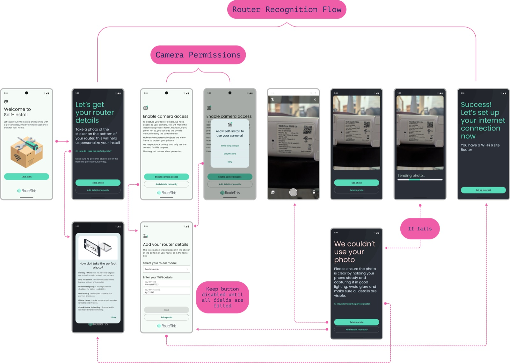
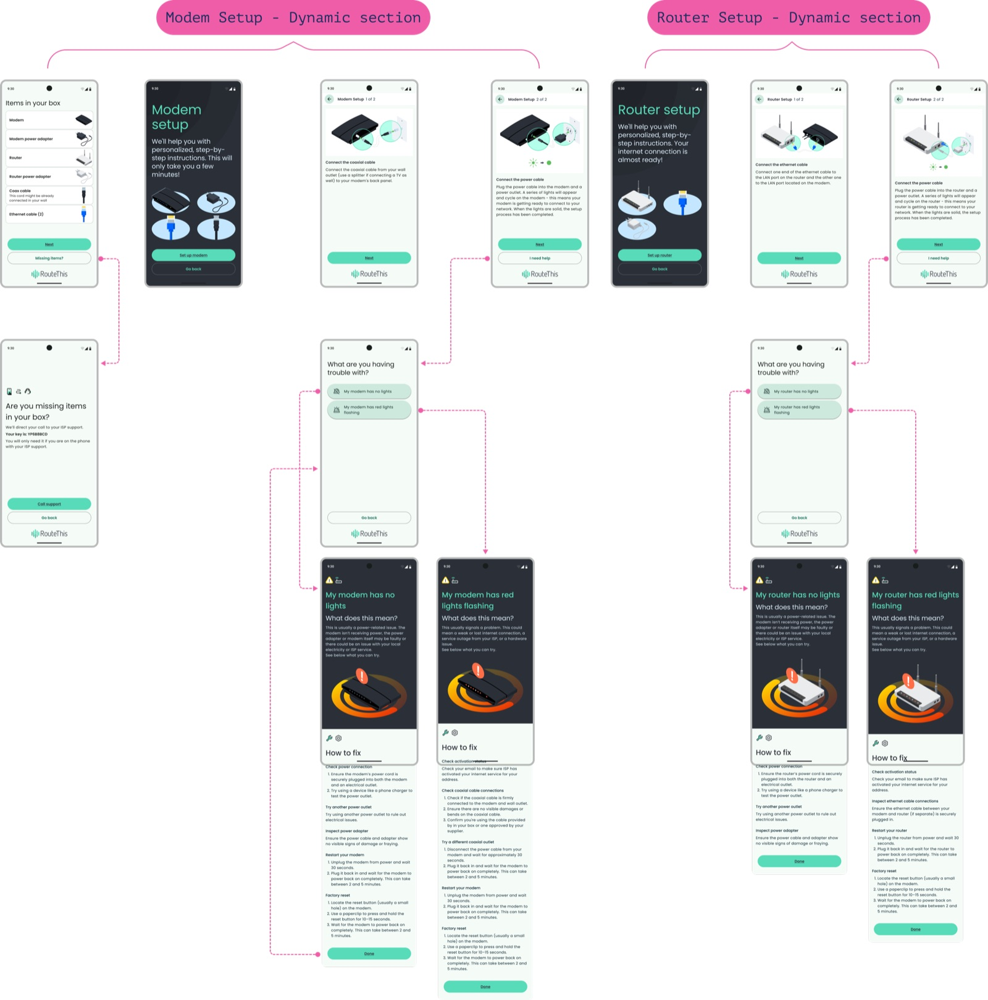
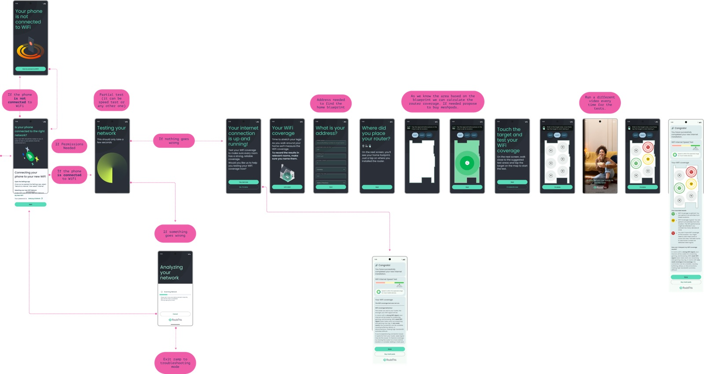

Role: Product Designer
Discovering and designing for a new user need enabling customers to set up their own internet without technician assistance through an intuitive mobile app experience.
01
Users wanted to save money and gain independence, but self-installation was intimidating. Internet providers offer devices and QR codes, but without guidance, customers often struggled with setup. The challenge: how to deliver a simple, hand-held experience that builds confidence and reduces frustration, covering a variety of modem and router models without overwhelming the user.
02
The business needed to support the entire end-to-end journey, starting when a customer decides to self-install, not just when problems arise. Key constraints included:
Key Constraint
The app had to guide diverse users through device setup confidently and efficiently while remaining flexible for multiple device types and ISP workflows.
03
I mapped the user journey from the moment customers received their devices to full setup. Research included:
This helped identify user motivations (convenience, cost savings) and frustration points, highlighting opportunities to simplify the process.
04
05
06
The app delivers a seamless self-install experience: Users scan their devices and follow a guided, step-by-step journey. AI automatically identifies equipment, eliminating forms and manual entry. The interface provides reassurance and feedback, helping users feel in control and confident.



07
08